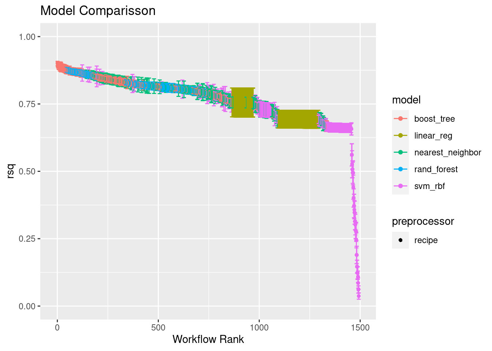
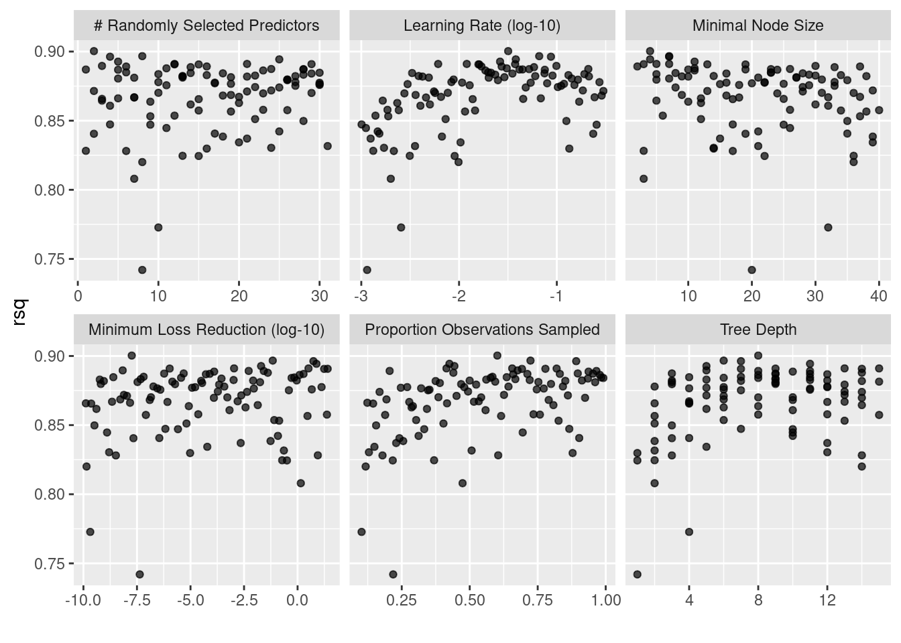
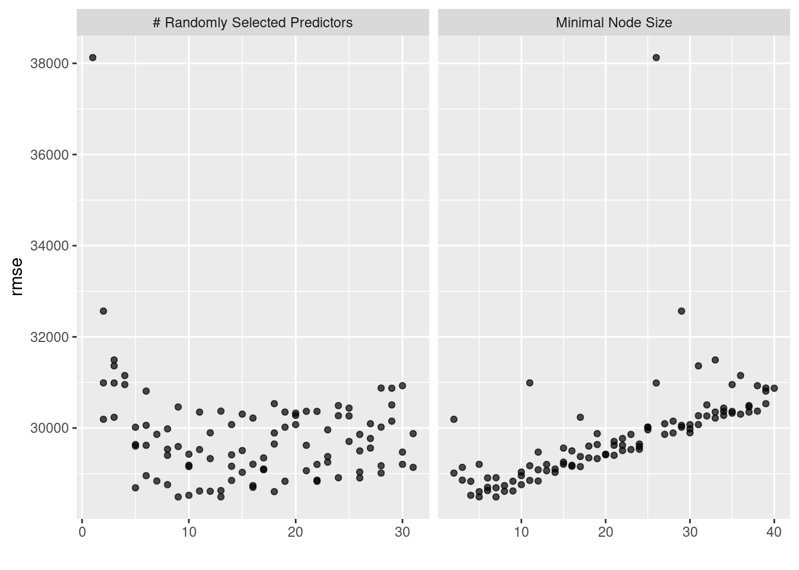
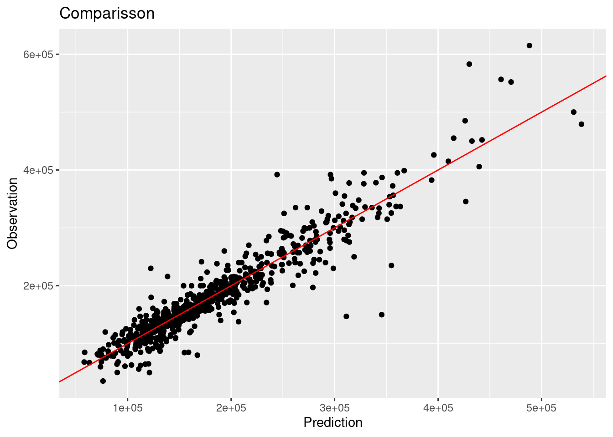
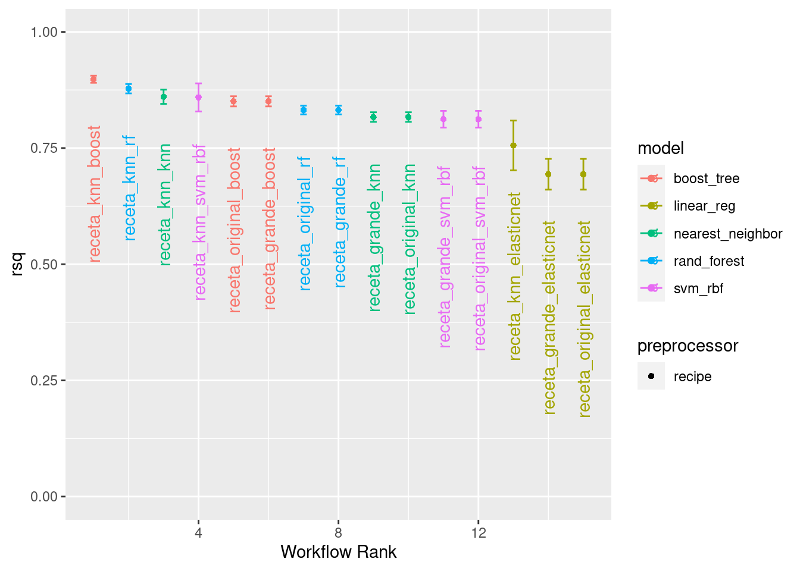

Capítulo 5 Workflowsets
Es común no sepamos ni remotamente cuál es el mejor modelo que podríamos implementar al iniciar un proyecto con datos que nunca antes hemos visto. Es posible que un profesional de datos deba seleccionar muchas combinaciones de modelos y preprocesadores. También es posible tener poco o ningún conocimiento a priori sobre qué método funcionará mejor con un nuevo conjunto de datos.
Una buena estrategia es dedicar un esfuerzo inicial a probar una variedad de enfoques de modelado, determinar qué funciona mejor y luego invertir tiempo adicional ajustando / optimizando un pequeño conjunto de modelos.
5.1 Múltiples recetas
Algunos modelos requieren predictores que se han centrado y escalado, por lo que algunos flujos de trabajo de modelos requerirán recetas con estos pasos de preprocesamiento. Para otros modelos, crear interacciones cuadráticas y bidireccionales. Para estos fines, creamos múltiples recetas:
library(tidymodels)
data(ames)
set.seed(4595)
ames_split <- initial_split(ames, prop = 0.75)
ames_train <- training(ames_split)
ames_test <- testing(ames_split)
ames_folds <- vfold_cv(ames_train)- Receta Original
receta_original <- recipe(Sale_Price ~ . , data = ames_train) %>%
step_unknown(Alley) %>%
step_rename(Year_Remod = Year_Remod_Add) %>%
step_rename(ThirdSsn_Porch = Three_season_porch) %>%
step_ratio(Bedroom_AbvGr, denom = denom_vars(Gr_Liv_Area)) %>%
step_mutate(
Age_House = Year_Sold - Year_Remod,
TotalSF = Gr_Liv_Area + Total_Bsmt_SF,
AvgRoomSF = Gr_Liv_Area / TotRms_AbvGrd,
Pool = if_else(Pool_Area > 0, 1, 0),
Exter_Cond = forcats::fct_collapse(Exter_Cond, Good = c("Typical", "Good", "Excellent"))) %>%
step_relevel(Exter_Cond, ref_level = "Good") %>%
step_normalize(all_predictors(), -all_nominal()) %>%
step_dummy(all_nominal()) %>%
step_interact(~ Second_Flr_SF:First_Flr_SF) %>%
step_interact(~ matches("Bsmt_Cond"):TotRms_AbvGrd) %>%
step_rm(
First_Flr_SF, Second_Flr_SF, Year_Remod,
Bsmt_Full_Bath, Bsmt_Half_Bath,
Kitchen_AbvGr, BsmtFin_Type_1_Unf,
Total_Bsmt_SF, Kitchen_AbvGr, Pool_Area,
Gr_Liv_Area, Sale_Type_Oth, Sale_Type_VWD
)
receta_original_prep <- receta_original %>% prep()- Receta PCA:
receta_knn <- recipe(Sale_Price ~ . , data = ames_train) %>%
step_unknown(Alley) %>%
step_unknown(Pool_QC) %>%
step_unknown(Misc_Feature) %>%
step_unknown(Fence) %>%
step_unknown(Garage_Finish) %>%
step_unknown(Garage_Cond) %>%
step_unknown(Garage_Type) %>%
step_unknown(Bsmt_Exposure) %>%
step_unknown(Bsmt_Cond) %>%
step_unknown(BsmtFin_Type_1) %>%
step_unknown(BsmtFin_Type_2) %>%
step_unknown(Mas_Vnr_Type) %>%
step_unknown(Electrical) %>%
step_impute_knn(
Mas_Vnr_Area, Lot_Frontage,
impute_with= all_predictors(),
neighbors = 5) %>%
step_rename(Year_Remod = Year_Remod_Add) %>%
step_rename(ThirdSsn_Porch = Three_season_porch) %>%
step_ratio(Bedroom_AbvGr, denom = denom_vars(Gr_Liv_Area)) %>%
step_mutate(
Age_House = Year_Sold - Year_Remod,
TotalSF = Gr_Liv_Area + Total_Bsmt_SF,
AvgRoomSF = Gr_Liv_Area / TotRms_AbvGrd,
Pool = if_else(Pool_Area > 0, 1, 0),
Exter_Cond = forcats::fct_collapse(Exter_Cond, Good = c("Typical", "Good", "Excellent"))) %>%
step_relevel(Exter_Cond, ref_level = "Good") %>%
step_normalize(all_predictors(), -all_nominal()) %>%
step_dummy(all_nominal()) %>%
step_interact(~ Second_Flr_SF:First_Flr_SF) %>%
step_interact(~ matches("Bsmt_Cond"):TotRms_AbvGrd)
receta_knn_prep <- receta_knn %>% prep()- Receta Grande:
receta_grande <- recipe(Sale_Price ~ . , data = ames_train) %>%
step_unknown(Alley) %>%
step_unknown(Fence) %>%
step_unknown(Garage_Type) %>%
step_unknown(Garage_Finish) %>%
step_unknown(Garage_Cond) %>%
step_unknown(Bsmt_Cond) %>%
step_unknown(Bsmt_Exposure) %>%
step_unknown(BsmtFin_Type_1) %>%
step_unknown(BsmtFin_Type_2) %>%
step_unknown(Mas_Vnr_Type) %>%
step_unknown(Electrical) %>%
step_unknown(Heating_QC) %>%
step_unknown(Pool_QC) %>%
step_rename(Year_Remod = Year_Remod_Add) %>%
step_rename(ThirdSsn_Porch = Three_season_porch) %>%
step_ratio(Bedroom_AbvGr, denom = denom_vars(Gr_Liv_Area)) %>%
step_ratio(Second_Flr_SF, denom = denom_vars(First_Flr_SF)) %>%
step_mutate(
TotalBaths = Full_Bath + Bsmt_Full_Bath + 0.5 * (Half_Bath + Bsmt_Half_Bath),
Age_House = Year_Sold - Year_Remod,
TotalSF = Gr_Liv_Area + Total_Bsmt_SF,
AvgRoomSF = Gr_Liv_Area / TotRms_AbvGrd,
Porch_SF = Enclosed_Porch + ThirdSsn_Porch + Open_Porch_SF,
Porch = factor(Porch_SF > 0),
Pool = if_else(Pool_Area > 0,1,0),
Exter_Cond = forcats::fct_collapse(Exter_Cond, Good = c("Typical", "Good", "Excellent")),
Condition_1 = forcats::fct_collapse(
Condition_1,
Artery_Feedr = c("Feedr", "Artery"),
Railr = c("RRAn", "RRNn", "RRNe", "RRAe"),
Norm = "Norm",
Pos = c("PosN", "PosA")),
Land_Slope = forcats::fct_collapse(Land_Slope, Mod_Sev = c("Mod", "Sev")),
Land_Contour = forcats::fct_collapse(Land_Contour, Low_HLS = c("Low","HLS"), Bnk_Lvl = c("Lvl","Bnk")),
Lot_Shape = forcats::fct_collapse(Lot_Shape, IRREG = c("Slightly_Irregular", "Moderately_Irregular", "Irregular")),
Bsmt_Cond = forcats::fct_collapse(Bsmt_Cond, Exc = c("Good", "Excellent")),
BsmtFin_Type_1 = forcats::fct_collapse(BsmtFin_Type_1, Rec_BLQ = c("Rec", "BLQ")),
BsmtFin_Type_2 = forcats::fct_collapse(BsmtFin_Type_2, Rec_BLQ = c("Rec", "BLQ","LwQ")),
Neighborhood = forcats::fct_collapse(
Neighborhood,
NoRidge_GrnHill = c("Northridge", "Green_Hills"),
Crawfor_Greens = c("Crawford", "Greens"),
Blueste_Mitchel = c("Blueste", "Mitchell"),
Blmngtn_CollgCr = c("Bloomington_Heights", "College_Creek"),
NPkVill_NAmes = c("Northpark_Villa", "North_Ames"),
Veenker_StoneBr = c("Veenker", "Stone_Brook"),
BrDale_IDOTRR = c("Briardale", "Iowa_DOT_and_Rail_Road"),
SWISU_Sawyer = c("South_and_West_of_Iowa_State_University", "Sawyer"),
ClearCr_Somerst = c("Clear_Creek", "Somerset")),
Heating = forcats::fct_collapse(
Heating, Grav_Wall = c("Grav", "Wall"),
GasA_W = c("GasA", "GasW", "OthW")),
MS_Zoning = forcats::fct_collapse(
MS_Zoning, I_R_M_H = c("Residential_Medium_Density", "I_all", "Residential_High_Density" )),
Bldg_Type = forcats::fct_collapse(Bldg_Type, Du_Tu = c("Duplex", "Twnhs")),
Foundation = forcats::fct_collapse(Foundation, Wood_Stone = c("Wood", "Stone")),
Functional = forcats::fct_collapse(
Functional, Min = c("Min1", "Min2"), Maj = c("Maj1", "Maj2", "Mod"))) %>%
step_relevel(Exter_Cond, ref_level = "Good") %>%
step_relevel(Condition_1, ref_level = "Norm") %>%
step_normalize(all_predictors(), -all_nominal()) %>%
step_dummy(all_nominal()) %>%
step_interact(~ Second_Flr_SF:Bedroom_AbvGr) %>%
step_interact(~ TotalSF:TotRms_AbvGrd) %>%
step_interact(~ Age_House:TotRms_AbvGrd) %>%
step_interact(~ Second_Flr_SF:First_Flr_SF) %>%
step_interact(~ matches("Bsmt_Cond"):TotRms_AbvGrd) %>%
step_interact(~ matches("BsmtFin_Type_1"):BsmtFin_SF_1) %>%
step_interact(~ matches("BsmtFin_Type_1"):Total_Bsmt_SF) %>%
step_interact(~ matches("Heating_QC"):TotRms_AbvGrd) %>%
step_interact(~ matches("Heating_QC"):TotalSF) %>%
step_interact(~ matches("Heating_QC"):Second_Flr_SF) %>%
step_interact(~ matches("Neighborhood"):matches("Condition_1")) %>%
step_rm(
First_Flr_SF, Second_Flr_SF, Year_Remod,
Bsmt_Full_Bath, Bsmt_Half_Bath,
Kitchen_AbvGr, BsmtFin_Type_1_Unf,
Total_Bsmt_SF, Kitchen_AbvGr, Pool_Area,
Gr_Liv_Area, Porch_SF,
Sale_Type_Oth, Sale_Type_VWD
)
receta_grande_prep <- receta_grande %>% prep()5.2 Múltiples modelos
Una vez que tenemos suficientes recetas, podemos experimentar con múltiples modelos para poner a prueba. Usaremos los modelos que hemos aprendido a implementar en todo el curso:
library(rules)
library(baguette)
library(tune)
elasticnet_model <- linear_reg(
mode = "regression",
penalty = tune(),
mixture = tune()) %>%
set_engine("glmnet")
knn_model <- nearest_neighbor(
mode = "regression",
neighbors = tune("K"),
dist_power = tune(),
weight_func = tune()) %>%
set_engine("kknn")
rforest_model <- rand_forest(
mode = "regression",
trees = 1000,
mtry = tune(),
min_n = tune()) %>%
set_engine(
"ranger",
importance = "impurity"
)
svm_rbf_model <- svm_rbf(
cost = tune(),
rbf_sigma = tune(),
margin = tune()) %>%
set_engine("kernlab") %>%
set_mode("regression")
xgboost_model <- boost_tree(
mode = "regression",
trees = 1000,
tree_depth = tune(),
min_n = tune(),
loss_reduction = tune(),
sample_size = tune(),
mtry = tune(),
learn_rate = tune()) %>%
set_engine(
"xgboost",
importance = "impurity"
)¿Cómo podemos hacer coincidir estos modelos con las recetas desarrolladas, ajustarlos y luego evaluar su rendimiento de manera eficiente? WORKFLOWSETS ofrece una solución.
5.3 Creación de workflowset
Los conjuntos de flujo de trabajo toman listas nombradas de preprocesadores y especificaciones de modelos y las combinan en un objeto que contiene múltiples flujos de trabajo.
Como primer ejemplo de conjunto de flujo de trabajo, combinemos las recetas creadas en la sección anterior.
workflow_set_models <- workflow_set(
preproc = list(
receta_original = receta_original_prep,
receta_knn = receta_knn_prep,
receta_grande = receta_grande_prep
),
models = list(
elasticnet = elasticnet_model,
knn = knn_model,
rf = rforest_model,
svm_rbf = svm_rbf_model,
boost = xgboost_model
)
)5.4 Ajuste y evaluación de modelos
Casi todos estos flujos de trabajo contienen parámetros de ajuste. Para evaluar su rendimiento, podemos utilizar las funciones estándar de ajuste o remuestreo (por ejemplo, tune_grid()).
La función workflow_map() aplicará la misma función a todos los flujos de trabajo del conjunto; el valor predeterminado es tune_grid().
A continuación se declaran los parámetros para cada modelo y el grid:
elasticnet_params <- elasticnet_model %>%
parameters() %>%
update(
penalty = penalty(
range = c(-2, 3),
trans = log10_trans()),
mixture = dials::mixture(range = c(0, 1))
)
knn_params <- knn_model %>%
parameters() %>%
update(
K = dials::neighbors(c(5, 80)),
dist_power = dist_power(range = c(1, 3)),
weight_func = weight_func(values = c("rectangular", "inv", "gaussian", "cos"))
)
rforest_params <- rforest_model %>%
parameters() %>%
update(
mtry = mtry(range = c(15, 150)),
min_n = min_n(range = c(3,15))
)
svm_rbf_params <- svm_rbf_model %>%
parameters() %>%
update(
cost = cost(c(0, 0.5)),
rbf_sigma = rbf_sigma(c(-3, 3)),
margin = svm_margin(c(-2, 2))
)
xgboost_params <- xgboost_model %>%
parameters() %>%
update(
min_n = min_n(range = c(5,15)),
mtry = mtry(range = c(15, 150)),
tree_depth = tree_depth(range = c(3, 50)),
loss_reduction = loss_reduction(range = c(-10, 1.5), trans = log10_trans()),
learn_rate = learn_rate(range = c(-6, -0.25), trans = log10_trans()),
sample_size = sample_prop()
)
# Declaración del grid
workflow_tunning_set_models <- workflow_set_models %>%
option_add(param_info = elasticnet_params, id = "elasticnet") %>%
option_add(param_info = knn_params, id = "knn") %>%
option_add(param_info = rforest_params, id = "rf") %>%
option_add(param_info = svm_rbf_params, id = "svm_rbf") %>%
option_add(param_info = xgboost_params, id = "xgboost")
workflow_tunning_set_models## # A workflow set/tibble: 15 × 4
## wflow_id info option result
## <chr> <list> <list> <list>
## 1 receta_original_elasticnet <tibble [1 × 4]> <opts[0]> <list [0]>
## 2 receta_original_knn <tibble [1 × 4]> <opts[0]> <list [0]>
## 3 receta_original_rf <tibble [1 × 4]> <opts[0]> <list [0]>
## 4 receta_original_svm_rbf <tibble [1 × 4]> <opts[0]> <list [0]>
## 5 receta_original_boost <tibble [1 × 4]> <opts[0]> <list [0]>
## 6 receta_knn_elasticnet <tibble [1 × 4]> <opts[0]> <list [0]>
## 7 receta_knn_knn <tibble [1 × 4]> <opts[0]> <list [0]>
## 8 receta_knn_rf <tibble [1 × 4]> <opts[0]> <list [0]>
## 9 receta_knn_svm_rbf <tibble [1 × 4]> <opts[0]> <list [0]>
## 10 receta_knn_boost <tibble [1 × 4]> <opts[0]> <list [0]>
## 11 receta_grande_elasticnet <tibble [1 × 4]> <opts[0]> <list [0]>
## 12 receta_grande_knn <tibble [1 × 4]> <opts[0]> <list [0]>
## 13 receta_grande_rf <tibble [1 × 4]> <opts[0]> <list [0]>
## 14 receta_grande_svm_rbf <tibble [1 × 4]> <opts[0]> <list [0]>
## 15 receta_grande_boost <tibble [1 × 4]> <opts[0]> <list [0]>Dado que el preprocesador contiene más de una entrada, la función crea todas las combinaciones de preprocesadores y modelos.
info: Contiene un tibble con algunos identificadores y el objeto de flujo de trabajo.
option: Es un marcador de posición para cualquier argumento que se utilice cuando evaluamos el flujo de trabajo.
result: Es un marcador de posición para la salida de las funciones de ajuste o remuestreo.
Para este ejemplo, la búsqueda del grid se aplica al flujo de trabajo.
library(doParallel)
UseCores <- detectCores() - 1
cluster <- makeCluster(UseCores)
registerDoParallel(cluster)
grid_ctrl <- control_grid(
save_pred = TRUE,
save_workflow = TRUE,
parallel_over = "everything"
)
set.seed(536)
tunning_models_result <- workflow_tunning_set_models %>%
workflow_map(
fn = "tune_grid",
seed = 20220603,
resamples = ames_folds,
grid = 100,
metrics = metric_set(rmse, mae, mape, rsq),
control = grid_ctrl,
verbose = TRUE
)
stopCluster(cluster)
tunning_models_result %>% saveRDS("models/ensemble_model.rds")tunning_models_result <- readRDS("models/ensemble_model.rds")
tunning_models_result %>%
rank_results(select_best = T) %>%
select(-c(.config, n, preprocessor, std_err)) %>%
pivot_wider(names_from = .metric, values_from = mean) ## # A tibble: 15 × 7
## wflow_id model rank mae mape rmse rsq
## <chr> <chr> <int> <dbl> <dbl> <dbl> <dbl>
## 1 receta_knn_boost boost_tree 1 16614. 10.4 25425. 0.900
## 2 receta_knn_rf rand_forest 2 17766. 11.1 28489. 0.877
## 3 receta_knn_svm_rbf svm_rbf 3 17985. 11.3 29103. 0.865
## 4 receta_knn_knn nearest_neighbor 4 19471. 11.6 30465. 0.861
## 5 receta_original_boost boost_tree 5 20019. 12.2 30569. 0.856
## 6 receta_grande_boost boost_tree 6 20019. 12.2 30569. 0.856
## 7 receta_original_rf rand_forest 7 21058. 12.9 33599. 0.828
## 8 receta_grande_rf rand_forest 8 21058. 12.9 33599. 0.828
## 9 receta_grande_knn nearest_neighbor 9 22561. 13.0 35353. 0.817
## 10 receta_original_knn nearest_neighbor 10 22561. 13.0 35353. 0.817
## 11 receta_grande_svm_rbf svm_rbf 11 22839. 13.8 35431. 0.807
## 12 receta_original_svm_rbf svm_rbf 12 22839. 13.8 35431. 0.807
## 13 receta_knn_elasticnet linear_reg 13 24196. 14.7 39880. 0.756
## 14 receta_grande_elasticnet linear_reg 14 30129. 18.4 44124. 0.694
## 15 receta_original_elasticnet linear_reg 15 30129. 18.4 44124. 0.694autoplot(
tunning_models_result,
rank_metric = "rsq",
metric = "rsq",
select_best = F) +
lims(y = c(0, 1)) +
ggtitle("Model Comparisson")
autoplot(
tunning_models_result,
rank_metric = "rsq",
metric = "rsq",
select_best = T) +
geom_text(aes(y = mean - 0.10 , label = wflow_id), angle = 90, hjust = 1) +
lims(y = c(0, 1)) +
ggtitle("Model Comparisson")
5.5 Extracción de modelos
Una vez que hemos realizado una exploración sobre el desempeño de todas las combinaciones de preprocesamientos con modelos, es posible tomar varios caminos hacia adelante. Algunas de las opciones más comunes son:
Realizar múltiples iteraciones de modificaciones a las recetas para extraer lo mejor de cada una.
Realizar mejoras a los hiperparámetros.
Eliminar modelos y/o recetas que no tuvieron buen desempeño.
Crear un modelo a partir de la combinación de los modelos más competentes.
Para empezar, se realiza una exploración del resultado del desempeño de los mejores modelos y los hiperparámetros usado en cada caso.
Resultados de XGBoost
tunning_models_result %>%
extract_workflow_set_result("receta_knn_boost") %>%
autoplot(metric = "rsq")
tunning_models_result %>%
extract_workflow_set_result("receta_knn_boost") %>%
show_best(n = 10, metric = "rsq") %>%
select(-c(.estimator, .metric, .config, n))## # A tibble: 10 × 8
## mtry min_n tree_depth learn_rate loss_reduction sample_size mean std_err
## <int> <int> <int> <dbl> <dbl> <dbl> <dbl> <dbl>
## 1 2 4 8 0.0318 0.0000000180 0.601 0.900 0.00487
## 2 8 7 6 0.0661 0.0692 0.723 0.897 0.00537
## 3 4 7 7 0.0871 5.50 0.892 0.896 0.00493
## 4 25 4 11 0.0381 7.61 0.425 0.894 0.00596
## 5 5 11 5 0.0263 0.0198 0.444 0.893 0.00581
## 6 21 5 13 0.0120 0.00108 0.415 0.891 0.00724
## 7 12 7 15 0.00611 3.24 0.656 0.891 0.00730
## 8 29 3 9 0.0375 0.00000107 0.820 0.891 0.00419
## 9 12 13 14 0.0158 25.3 0.778 0.891 0.00825
## 10 15 19 7 0.0161 17.5 0.692 0.891 0.00767Resultados de Ranfom Forest
tunning_models_result %>%
extract_workflow_set_result("receta_knn_rf") %>%
autoplot(metric = "rmse")
tunning_models_result %>%
extract_workflow_set_result("receta_knn_rf") %>%
show_best(n = 10, metric = "rmse") %>%
select(-c(.estimator, .metric, .config, n))## # A tibble: 10 × 4
## mtry min_n mean std_err
## <int> <int> <dbl> <dbl>
## 1 9 7 28489. 1010.
## 2 13 5 28491. 883.
## 3 10 4 28524. 970.
## 4 18 5 28604. 882.
## 5 12 8 28613. 947.
## 6 11 9 28620. 939.
## 7 13 6 28628. 928.
## 8 5 7 28689. 1052.
## 9 16 6 28699. 920.
## 10 16 8 28737. 912.5.5.1 Selección de modelo
Habiendo determinado los hiperparámetros adecuados para la configuración del modelo, procedemos a seleccionar la configuración adecuada para nosotros. Estos pasos son los mismos que corresponden a la selección del modelo con un único workflow.
Mejore modelo XGBoost
best_xgb_model <- tunning_models_result %>%
extract_workflow_set_result("receta_knn_boost") %>%
select_best(metric = "rsq", "rsq")
best_xgb_model %>%
mutate_all(as.character) %>%
pivot_longer(everything(), names_to = "metric", values_to = "value")## # A tibble: 7 × 2
## metric value
## <chr> <chr>
## 1 mtry 2
## 2 min_n 4
## 3 tree_depth 8
## 4 learn_rate 0.0318069757974226
## 5 loss_reduction 1.8022375282862e-08
## 6 sample_size 0.60145520768594
## 7 .config Preprocessor1_Model058Mejore modelo XGBoost a menos de una desviación estandar
best_regularized_xgb_model_1se <- tunning_models_result %>%
extract_workflow_set_result("receta_knn_boost") %>%
select_by_one_std_err(metric = "rsq", "rsq")
best_regularized_xgb_model_1se %>%
mutate_all(as.character) %>%
pivot_longer(everything(), names_to = "metric", values_to = "value")## # A tibble: 14 × 2
## metric value
## <chr> <chr>
## 1 mtry 8
## 2 min_n 7
## 3 tree_depth 6
## 4 learn_rate 0.0660688823690034
## 5 loss_reduction 0.0691664318630444
## 6 sample_size 0.723484068220947
## 7 .metric rsq
## 8 .estimator standard
## 9 mean 0.896674936544582
## 10 n 10
## 11 std_err 0.00536531804472105
## 12 .config Preprocessor1_Model035
## 13 .best 0.900303988301004
## 14 .bound 0.895438860790247Mejore modelo XGBoost a menos de un porcentaje fijo
best_regularized_xgb_model_pct <- tunning_models_result %>%
extract_workflow_set_result("receta_knn_boost") %>%
select_by_pct_loss(metric = "rsq", "rsq", limit = 10)
best_regularized_xgb_model_pct %>%
mutate_all(as.character) %>%
pivot_longer(everything(), names_to = "metric", values_to = "value")## # A tibble: 14 × 2
## metric value
## <chr> <chr>
## 1 mtry 13
## 2 min_n 36
## 3 tree_depth 2
## 4 learn_rate 0.00313559984945049
## 5 loss_reduction 0.190594567355415
## 6 sample_size 0.36900916616735
## 7 .metric rsq
## 8 .estimator standard
## 9 mean 0.824569900806526
## 10 n 10
## 11 std_err 0.00788602755362551
## 12 .config Preprocessor1_Model030
## 13 .best 0.900303988301004
## 14 .loss 8.41205731381887Ajuste del modelo seleccionado
final_regularized_xgb_model <- tunning_models_result %>%
extract_workflow("receta_knn_boost") %>%
finalize_workflow(best_regularized_xgb_model_1se) %>%
parsnip::fit(data = ames_train)## [10:34:20] WARNING: amalgamation/../src/learner.cc:627:
## Parameters: { "importance" } might not be used.
##
## This could be a false alarm, with some parameters getting used by language bindings but
## then being mistakenly passed down to XGBoost core, or some parameter actually being used
## but getting flagged wrongly here. Please open an issue if you find any such cases.final_regularized_xgb_model## ══ Workflow [trained] ══════════════════════════════════════════════════════════
## Preprocessor: Recipe
## Model: boost_tree()
##
## ── Preprocessor ────────────────────────────────────────────────────────────────
## 23 Recipe Steps
##
## • step_unknown()
## • step_unknown()
## • step_unknown()
## • step_unknown()
## • step_unknown()
## • step_unknown()
## • step_unknown()
## • step_unknown()
## • step_unknown()
## • step_unknown()
## • ...
## • and 13 more steps.
##
## ── Model ───────────────────────────────────────────────────────────────────────
## ##### xgb.Booster
## raw: 2.5 Mb
## call:
## xgboost::xgb.train(params = list(eta = 0.0660688823690034, max_depth = 6L,
## gamma = 0.0691664318630444, colsample_bytree = 1, colsample_bynode = 0.258064516129032,
## min_child_weight = 7L, subsample = 0.723484068220947, objective = "reg:squarederror"),
## data = x$data, nrounds = 1000, watchlist = x$watchlist, verbose = 0,
## importance = "impurity", nthread = 1)
## params (as set within xgb.train):
## eta = "0.0660688823690034", max_depth = "6", gamma = "0.0691664318630444", colsample_bytree = "1", colsample_bynode = "0.258064516129032", min_child_weight = "7", subsample = "0.723484068220947", objective = "reg:squarederror", importance = "impurity", nthread = "1", validate_parameters = "TRUE"
## xgb.attributes:
## niter
## callbacks:
## cb.evaluation.log()
## # of features: 31
## niter: 1000
## nfeatures : 31
## evaluation_log:
## iter training_rmse
## 1 185201.353
## 2 173702.070
## ---
## 999 1852.079
## 1000 1847.1915.5.2 Método de carrera
Un problema con la búsqueda del grid es que todos los modelos deben ajustarse en todos los remuestreos antes de que se puedan evaluar los parámetros de ajuste.
En machine learning, el conjunto de técnicas que son llamadas métodos de carreras evalúa todos los modelos en un subconjunto inicial de remuestreo. En función de sus métricas de rendimiento actuales, algunos conjuntos de parámetros no se consideran en remuestreos posteriores.
Dado un workflow, podemos usar la función workflow_map() para un enfoque de carreras. El paquete finetune contiene funciones para el método de carreras. Calcula un conjunto de métricas de rendimiento (por ejemplo, precisión o RMSE) para un conjunto predefinido de parámetros de ajuste que corresponden a un modelo o receta a través de una o más muestras de los datos.
5.5.2.1 Optimización ANOVA
Realiza un modelo de análisis de varianza (ANOVA) para probar la significación estadística de las diferentes configuraciones del modelo. Después de evaluar un número inicial de remuestreos, el proceso elimina las combinaciones de parámetros de ajuste que probablemente no sean los mejores resultados usando medidas repetidas de un modelo ANOVA. La función implementada es tune_race_anova
library(finetune)
UseCores <- detectCores() - 1
cluster <- makeCluster(UseCores)
registerDoParallel(cluster)
race_ctrl <- control_race(
save_pred = TRUE,
parallel_over = "everything",
save_workflow = TRUE
)
tunning_race_anova_results <- workflow_tunning_set_models %>%
workflow_map(
"tune_race_anova",
seed = 1503,
resamples = ames_folds,
grid = 100,
metrics = metric_set(rmse, mae, mape, rsq),
control = race_ctrl,
verbose = TRUE
)
stopCluster(cluster)
tunning_race_anova_results %>% saveRDS("models/race_anova_results.rds")Las mismas funciones útiles están disponibles para que este objeto interrogue los resultados y, de hecho, el método básico autoplot() produce tendencias similares:
tunning_race_anova_results %>%
rank_results(select_best = T) %>%
select(-c(.config, n, preprocessor, std_err)) %>%
pivot_wider(names_from = .metric, values_from = mean)## # A tibble: 15 × 7
## wflow_id model rank mae mape rmse rsq
## <chr> <chr> <int> <dbl> <dbl> <dbl> <dbl>
## 1 receta_knn_boost boost_tree 1 17446. 10.9 26661. 0.890
## 2 receta_knn_rf rand_forest 2 17717. 11.1 28540. 0.874
## 3 receta_knn_knn nearest_neighbor 3 19542. 11.5 30991. 0.858
## 4 receta_original_boost boost_tree 4 21019. 12.8 32223. 0.839
## 5 receta_grande_boost boost_tree 5 21019. 12.8 32223. 0.839
## 6 receta_original_rf rand_forest 6 21117. 12.9 33686. 0.826
## 7 receta_grande_rf rand_forest 7 21117. 12.9 33686. 0.826
## 8 receta_knn_svm_rbf svm_rbf 8 20491. 12.5 34700. 0.815
## 9 receta_grande_knn nearest_neighbor 9 22582. 13.0 35541. 0.816
## 10 receta_original_knn nearest_neighbor 10 22582. 13.0 35541. 0.816
## 11 receta_grande_svm_rbf svm_rbf 11 24433. 14.7 38699. 0.776
## 12 receta_original_svm_rbf svm_rbf 12 24433. 14.7 38699. 0.776
## 13 receta_knn_elasticnet linear_reg 13 24196. 14.7 39883. 0.756
## 14 receta_grande_elasticnet linear_reg 14 30128. 18.4 44127. 0.694
## 15 receta_original_elasticnet linear_reg 15 30128. 18.4 44127. 0.694autoplot(
tunning_race_anova_results,
rank_metric = "rsq",
metric = "rsq",
select_best = TRUE) +
geom_text(aes(y = mean - 0.10 , label = wflow_id), angle = 90, hjust = 1) +
lims(y = c(0, 1))
5.5.2.2 Optimización logística
Después de evaluar un número inicial de remuestreos, el proceso elimina las combinaciones de parámetros de ajuste que probablemente no sean los mejores resultados usando un modelo estadístico. Para cada combinación por pares de parámetros de ajuste, se calculan las estadísticas de ganancia/pérdida y se usa un modelo de regresión logística para medir la probabilidad de que cada combinación gane en general. Esto se logra mediante la función tune_race_win_loss
UseCores <- detectCores() - 1
cluster <- makeCluster(UseCores)
registerDoParallel(cluster)
race_ctrl <- control_race(
save_pred = TRUE,
parallel_over = "everything",
save_workflow = TRUE
)
tunning_race_win_loss_results <- workflow_tunning_set_models %>%
workflow_map(
"tune_race_win_loss",
seed = 1503,
resamples = ames_folds,
grid = 20,
metrics = metric_set(rmse, mae, mape, rsq),
control = race_ctrl,
verbose = TRUE
)
stopCluster(cluster)
tunning_race_win_loss_results %>% saveRDS("models/race_win_loss_results.rds")Las mismas funciones útiles están disponibles para que este objeto interrogue los resultados y, de hecho, el método básico autoplot() produce tendencias similares:
tunning_race_win_loss_results %>%
rank_results(select_best = T) %>%
select(-c(.config, n, preprocessor, std_err)) %>%
pivot_wider(names_from = .metric, values_from = mean)## # A tibble: 15 × 7
## wflow_id model rank mae mape rmse rsq
## <chr> <chr> <int> <dbl> <dbl> <dbl> <dbl>
## 1 receta_knn_boost boost_tree 1 17429. 10.9 26616. 0.890
## 2 receta_knn_rf rand_forest 2 17723. 11.1 28467. 0.876
## 3 receta_knn_knn nearest_neighbor 3 19542. 11.5 30991. 0.858
## 4 receta_original_boost boost_tree 4 20802. 12.7 31414. 0.846
## 5 receta_grande_boost boost_tree 5 20802. 12.7 31414. 0.846
## 6 receta_original_rf rand_forest 6 21117. 12.9 33693. 0.826
## 7 receta_grande_rf rand_forest 7 21117. 12.9 33693. 0.826
## 8 receta_knn_svm_rbf svm_rbf 8 20491. 12.5 34700. 0.815
## 9 receta_grande_knn nearest_neighbor 9 22582. 13.0 35541. 0.816
## 10 receta_original_knn nearest_neighbor 10 22582. 13.0 35541. 0.816
## 11 receta_grande_svm_rbf svm_rbf 11 24433. 14.7 38699. 0.776
## 12 receta_original_svm_rbf svm_rbf 12 24433. 14.7 38699. 0.776
## 13 receta_knn_elasticnet linear_reg 13 24196. 14.7 39883. 0.756
## 14 receta_grande_elasticnet linear_reg 14 30128. 18.4 44127. 0.694
## 15 receta_original_elasticnet linear_reg 15 30128. 18.4 44127. 0.694autoplot(
tunning_race_win_loss_results,
rank_metric = "rsq",
metric = "rsq",
select_best = TRUE) +
geom_text(aes(y = mean - 0.10 , label = wflow_id), angle = 90, hjust = 1) +
lims(y = c(0, 1))
5.5.2.3 Optimización bayesiana
La función tune_bayes usa modelos para crear nuevas combinaciones de hiperparámetros que sean candidatos de tunning basado en resultados previos.
UseCores <- detectCores() - 1
cluster <- makeCluster(UseCores)
registerDoParallel(cluster)
race_ctrl <- control_bayes(
verbose = TRUE,
save_pred = TRUE,
parallel_over = "everything",
save_workflow = TRUE
)
set.seed(20220603)
tunning_race_bayes_results <- workflow_tunning_set_models %>%
workflow_map(
"tune_bayes",
seed = 1503,
resamples = ames_folds,
iter = 100,
metrics = metric_set(rmse, mae, mape, rsq),
control = race_ctrl,
verbose = TRUE
)
stopCluster(cluster)
tunning_race_bayes_results %>% saveRDS("models/race_bayes_results.rds")Las mismas funciones útiles están disponibles para que este objeto interrogue los resultados y, de hecho, el método básico autoplot() produce tendencias similares:
tunning_race_bayes_resultstunning_race_bayes_results$resulttunning_race_bayes_results %>%
rank_results(select_best = T) %>%
select(-c(.config, n, preprocessor, std_err)) %>%
pivot_wider(names_from = .metric, values_from = mean)autoplot(
tunning_race_bayes_results,
rank_metric = "rsq",
metric = "rsq",
select_best = TRUE) +
geom_text(aes(y = mean - 0.10 , label = wflow_id), angle = 90, hjust = 1) +
lims(y = c(0, 1))UseCores <- detectCores() - 1
cluster <- makeCluster(UseCores)
registerDoParallel(cluster)
race_ctrl <- control_sim_anneal(
verbose = TRUE,
no_improve = 10L,
restart = 10L,
radius = c(0.01, 0.20)
)
set.seed(20220603)
tunning_race_sim_anneal_results <- workflow_tunning_set_models %>%
workflow_map(
"tune_sim_anneal",
seed = 1503,
resamples = ames_folds,
iter = 100,
metrics = metric_set(rmse, mae, mape, rsq),
control = race_ctrl,
verbose = TRUE
)
stopCluster(cluster)
tunning_race_sim_anneal_results %>% saveRDS("models/race_sim_anneal_results.rds")tunning_race_sim_anneal_results$resulttunning_race_sim_anneal_results %>%
rank_results(select_best = T) %>%
select(-c(.config, n, preprocessor, std_err)) %>%
pivot_wider(names_from = .metric, values_from = mean)